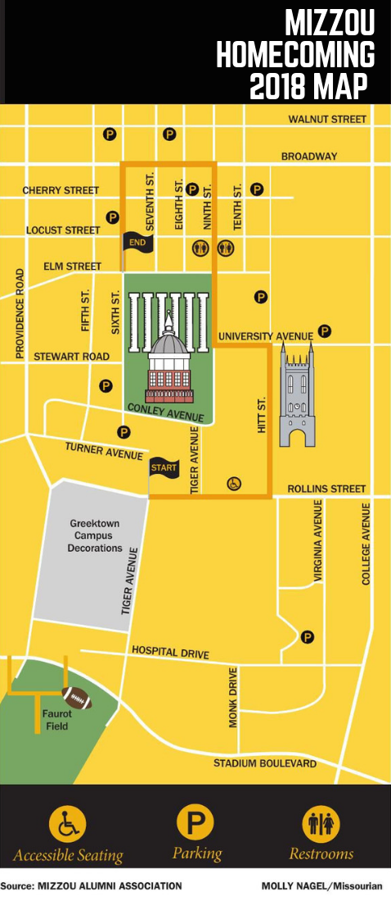
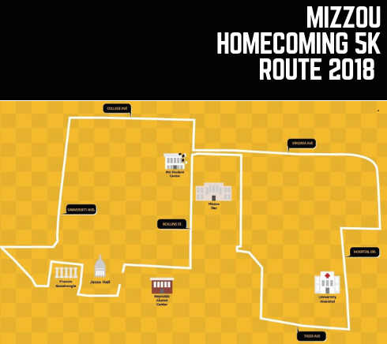

MAPS
This is a map of everything related to Mizzou's homecoming. It includes the location of the parade route, greek house decorations, parking structures, bathrooms, as well as wheelchare accessible places on campus. Additionally, there is another map of the route for the 5K below.

